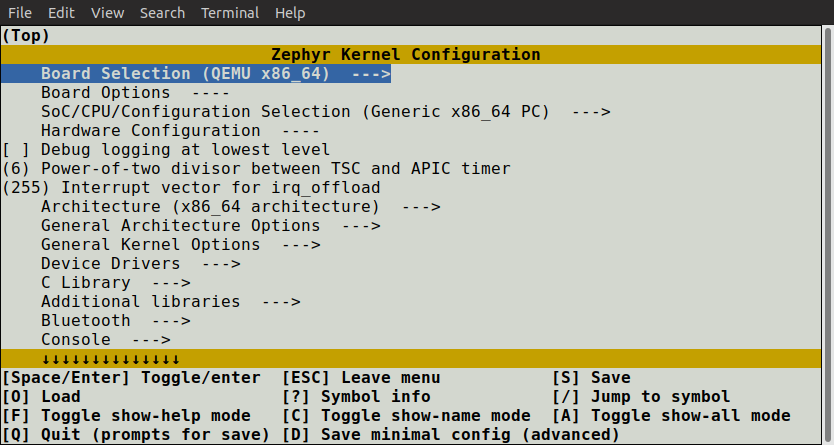
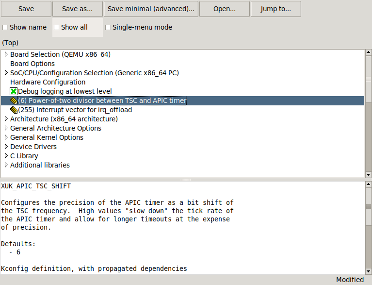
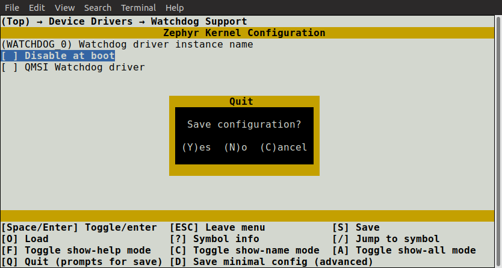
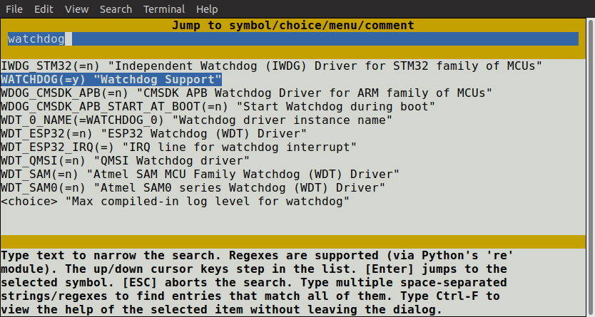
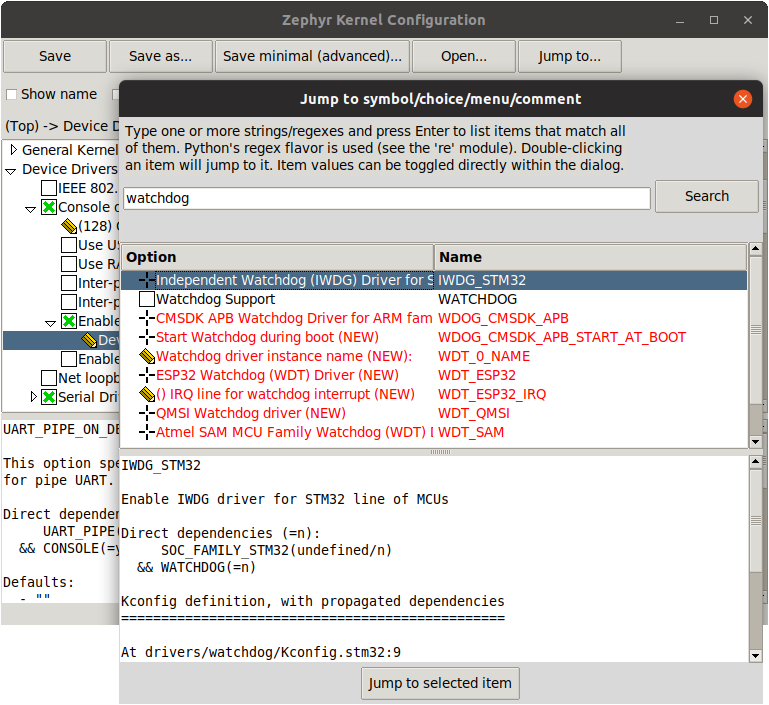

Interactive Kconfig interfaces
There are two interactive configuration interfaces available for exploring the
available Kconfig options and making temporary changes: menuconfig and
guiconfig. menuconfig is a curses-based interface that runs in the
terminal, while guiconfig is a graphical configuration interface.
Note
The configuration can also be changed by editing zephyr/.config in
the application build directory by hand. Using one of the configuration
interfaces is often handier, as they correctly handle dependencies between
configuration symbols.
If you try to enable a symbol with unsatisfied dependencies in
zephyr/.config, the assignment will be ignored and overwritten when
re-configuring.
To make a setting permanent, you should set it in a *.conf file, as
described in Setting Kconfig configuration values.
Tip
Saving a minimal configuration file (with e.g. D in menuconfig) and inspecting it can be handy when making settings permanent. The minimal configuration file only lists symbols that differ from their default value.
To run one of the configuration interfaces, do this:
Build your application as usual using either
westorcmake:Using west:
west build -b <board>
Using CMake and ninja:
mkdir build && cd build cmake -GNinja -DBOARD=<board> .. ninja
To run the terminal-based
menuconfiginterface, use either of these commands:west build -t menuconfig
ninja menuconfigTo run the graphical
guiconfig, use either of these commands:west build -t guiconfig
ninja guiconfigNote
If you get an import error for
tkinterwhen trying to runguiconfig, you are missing required packages. See Install Linux Host Dependencies. The package you need is usually called something likepython3-tk/python3-tkinter.tkinteris not included by default in many Python installations, despite being part of the standard library.The two interfaces are shown below:


guiconfigalways shows the help text and other information related to the currently selected item in the bottom window pane. In the terminal interface, press ? to view the same information.Note
If you prefer to work in the
guiconfiginterface, then it’s a good idea to check any changes to Kconfig files you make in single-menu mode, which is toggled via a checkbox at the top. Unlike full-tree mode, single-menu mode will distinguish between symbols defined withconfigand symbols defined withmenuconfig, showing you what things would look like in themenuconfiginterface.Change configuration values in the
menuconfiginterface as follows:Navigate the menu with the arrow keys. Common Vim key bindings are supported as well.
Use Space and Enter to enter menus and toggle values. Menus appear with
--->next to them. Press ESC to return to the parent menu.Boolean configuration options are shown with [ ] brackets, while numeric and string-valued configuration symbols are shown with ( ) brackets. Symbol values that can’t be changed are shown as - - or -*-.
Note
You can also press Y or N to set a boolean configuration symbol to the corresponding value.
Press ? to display information about the currently selected symbol, including its help text. Press ESC or Q to return from the information display to the menu.
In the
guiconfiginterface, either click on the image next to the symbol to change its value, or double-click on the row with the symbol (this only works if the symbol has no children, as double-clicking a symbol with children open/closes its menu instead).guiconfigalso supports keyboard controls, which are similar tomenuconfig.Pressing Q in the
menuconfiginterface will bring up the save-and-quit dialog (if there are changes to save):
Press Y to save the kernel configuration options to the default filename (
zephyr/.config). You will typically save to the default filename unless you are experimenting with different configurations.The
guiconfiginterface will also prompt for saving the configuration on exit if it has been modified.Note
The configuration file used during the build is always
zephyr/.config. If you have another saved configuration that you want to build with, copy it tozephyr/.config. Make sure to back up your original configuration file.Also note that filenames starting with
.are not listed bylsby default on Linux and macOS. Use the-aflag to see them.
Finding a symbol in the menu tree and navigating to it can be tedious. To jump
directly to a symbol, press the / key (this also works in
guiconfig). This brings up the following dialog, where you can search for
symbols by name and jump to them. In guiconfig, you can also change symbol
values directly within the dialog.


If you jump to a symbol that isn’t currently visible (e.g., due to having
unsatisfied dependencies), then show-all mode will be enabled. In show-all
mode, all symbols are displayed, including currently invisible symbols. To turn
off show-all mode, press A in menuconfig or Ctrl-A in
guiconfig.
Note
Show-all mode can’t be turned off if there are no visible items in the current menu.
To figure out why a symbol you jumped to isn’t visible, inspect its
dependencies, either by pressing ? in menuconfig or in the
information pane at the bottom in guiconfig. If you discover that the
symbol depends on another symbol that isn’t enabled, you can jump to that
symbol in turn to see if it can be enabled.
Note
In menuconfig, you can press Ctrl-F to view the help of the
currently selected item in the jump-to dialog without leaving the dialog.
For more information on menuconfig and guiconfig, see the Python
docstrings at the top of menuconfig.py and guiconfig.py.